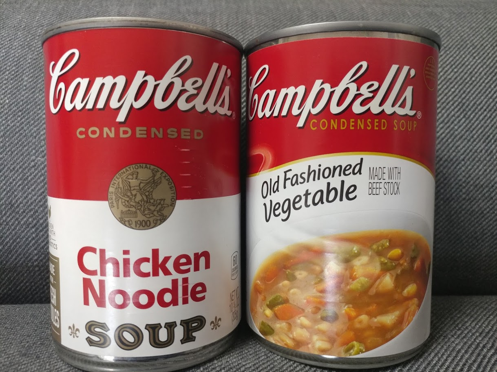
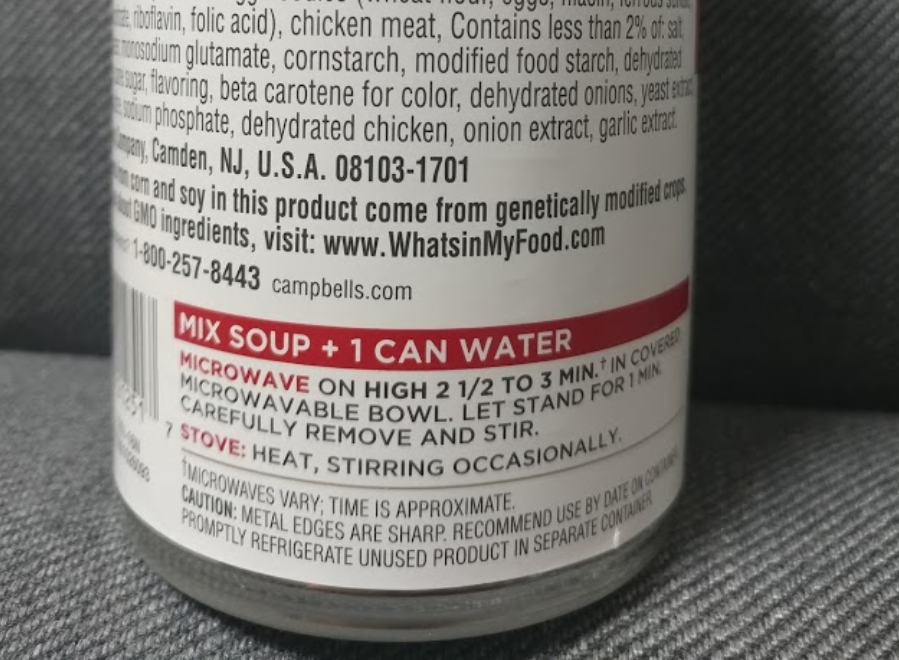
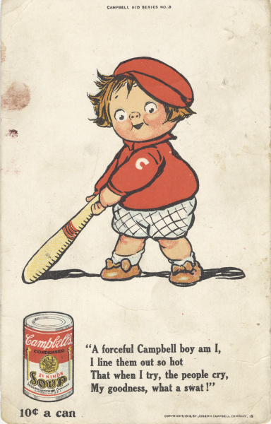
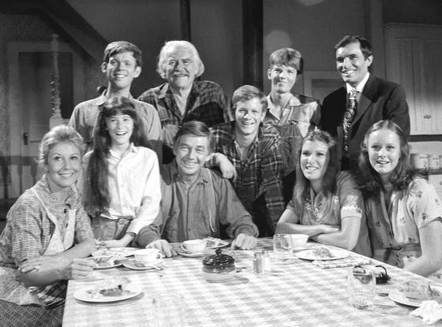
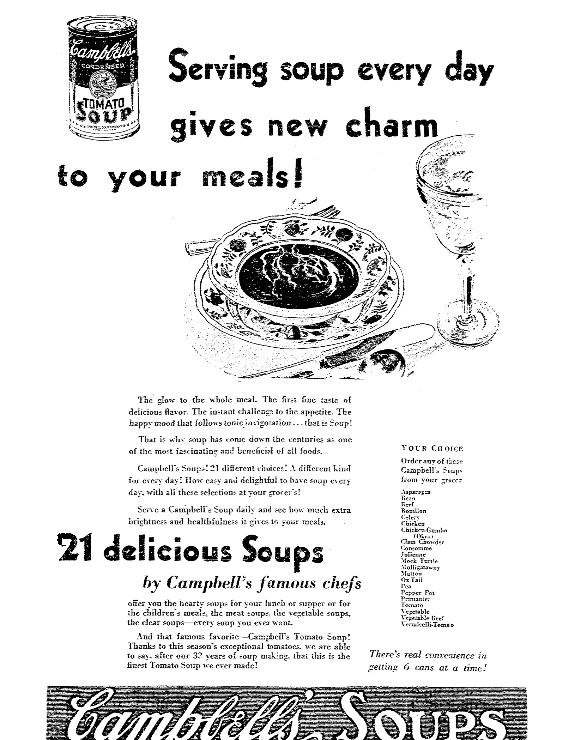
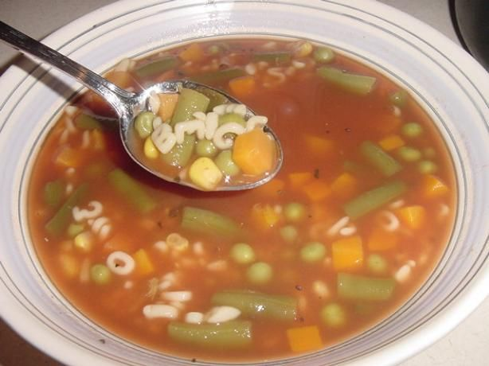
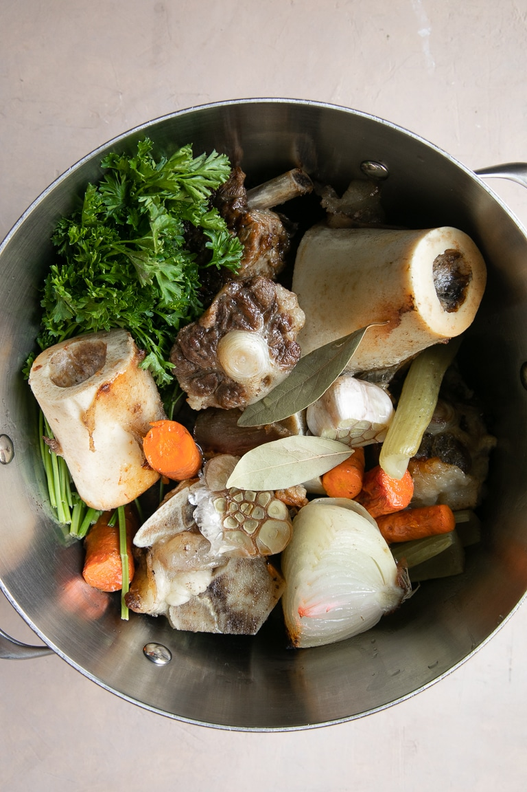
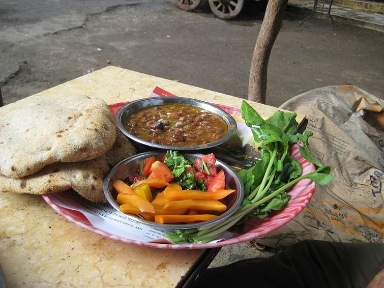
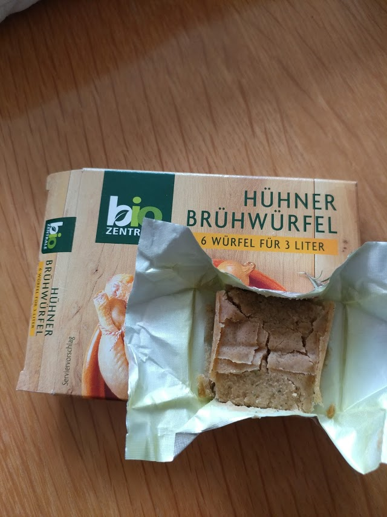
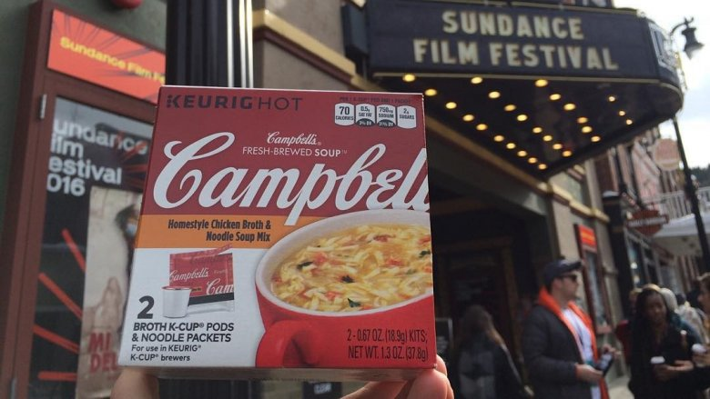

바쁜 서민의 한끼, 캠벨 깡통 수프 이야기
게시: 2020-03-02T06:30:47+09:00
최근 코로나-19 때문에 요식업은 크게 타격을 받고 있지만 배달 식품은 많이 팔립니다. 저희 집에서도 택배로 이런저런 식품류를 많이 샀는데, 이왕 사는 김에 캠벨 깡통 수프 2종류를 샀습니다. 야채 수프와 치킨 누들 수프로요. 저는 수프 좋아하거든요. 미국에 장기 출장을 갈 때면 가끔 수퍼마켓에서 깡통 수프를 사다 먹었는데, 짜긴 해도 제게는 나름대로 맛있습니다. 와이프는 소비자 평을 읽어보고는 맛이 없을 것이라는 이유로 캠벨 깡통 수프 사는 것에 반대했습니다만, 제가 위기의 시대엔 장기 보존 식품이 필요하다는 논리로 우겨서 샀지요.

(왼쪽 치킨 누들 수프가 미국에서 가장 많이 팔리는 메뉴입니다. 왼쪽 깡통 가운데의 무슨 메달 같은 것은 1900년 파리 국제 박람회에 출품하여 받은 메달입니다. 원래 프랑스어로 되어 있던 것을 영어로 바꿔서 깡통에 사용하고 있습니다.)
제게는 나쁜 버릇이 매우 많습니다만, 그 중에서도 아무 논리도 없이 고수하는 것 중 하나가 '남자라면 매뉴얼 따위는 읽어서는 안된다'라는 원칙입니다. 그냥 이거저거 눌러보고 만져보다가 사용법을 알아야 진짜 남자...라는 건 물론 스스로에게 하는 농담이고, 실은 재미도 없고 감동도 없는 작은 글씨 보는 것이 귀찮아서 안 봅니다. 그래서 가끔 대가를 치르는데, 이번에 보니 이미 대가를 치루고 있었더군요. 와이프가 손으로 가리키는 깡통 뒤편에 적힌 지시 내용을 보니 이 깡통 수프에는 같은 분량의 물을 추가해서 끓여야 하는 것이더라고요. 가만 보니 깡통에 'condensed'라고 씌여 있었는데, 저는 몰랐습니다. 어쩐지 미국 사람들이 짜게 먹는다고 해도 수프가 너무 짜더라니... 저는 그것도 모르고 그냥 물을 조금만 더 넣었지요. 야채 수프와 치킨 누들 수프 둘 다 가족들도 '생각했던 것보다는 맛있다'라고 하더군요.

(저렇게 빨간 테까지 둘러서 굵은 글자로 써놨는데도 제가 여태까지 못 봤어요... 한 캔이면 2명이서 먹을 정도의 양입니다.)

(1913년도 광고입니다. 쌉니다 ! 맛도 좋아서 앤디 워홀도 20년 넘게 점심으로는 꼭 캠벨 수프를 먹었다고 합니다.)
캠벨 깡통 수프는 맥도날드 햄버거와 함께 미국을 상징하는 대표적인 서민 음식입니다. 깡통 하나에 대략 4달러 정도하니까 비싼 편은 아닙니다. 또 1900년대 초반부터 캔 하나에 10센트 정도의 낮은 가격을 유지했고, 2000년대 초반까지도 1달러 정도로 낮은 가격을 고수했습니다. 원래 수프라는 음식은 분명히 고급 음식은 아닙니다. 적은 재료로 여럿이 나눠먹으려면 물을 붓고 끓이는 것이 최고거든요. 그런 점 때문에 캠벨 수프가 경제 지표 측면에서도 중요한 위치를 차지하곤 했습니다. 경기가 불황으로 접어들면 대부분의 회사 주가가 떨어지는데, 캠벨 수프 사의 주가는 그와는 좀 반대로 움직였답니다. 경기가 나빠지면 서민들이 허리띠를 졸라매느라 값싸고 든든한 캠벨 수프를 많이 사먹기 때문에 캠벨의 판매 실적이 좋아졌기 때문이었지요.

('월튼네 사람들'입니다. 가운데 앉은 아버지 얼굴은 지금도 알아보겠네요.)
제가 어릴 때는 TV에서 이런저런 미국 드라마를 많이 방영해주었습니다. 어린 저는 그런 걸 보면서 세련되고 잘 사는 나라 미국을 동경했지요. (알고 보면 당시 전 세계 어린이들이 다 그랬던 것 같습니다.) 그런 드라마 중에 '월튼네 사람들'이라고, 일종의 미국판 전원일기 같은 드라마가 있었습니다. 1970년 대에 미국에서 방영된 것이었는데, 배경은 1930년대 후반~1940년대 초반의 미국 버지니아 시골에 사는 대가족 이야기였습니다. 그 드라마 내용 중에 아직도 기억 나는 것이 있습니다. 그 집 큰 딸이 동네 가게에서 장을 보는데, 깡통 수프를 아주 많이 여러개 사더라고요. 당시 우리나라에서는 그때까지만 해도, 깡통에 든 음식은 그게 뭐든 다 좀 비싼 음식이라고 인식되었습니다. 그런데 저런 시골 마을의 평범한 가족이 집에서 오뚜기 수프 가루로 수프를 끓이지 않고 깡통에 든 것을 저렇게 많이 아무렇지도 않게 사다니 ! 어린 제게는 정말 미국이 잘사는 부자 나라로 느껴졌습니다.

(꽤 오래된 캠벨 수프 신문 광고입니다. 그림만 보면 상류층 식사처럼 보입니다만, 그런 분들이 설마 깡통 수프 드시겠습니까?)
그런데 알고보면 깡통 수프야말로 서민들이 즐겨찾을 수 밖에 없는 음식입니다. 우리나라의 국이나 탕은 미리 일부 재료를 볶아야 하고 마늘을 넣네 마네 고운 고추가루를 넣어야 하거나 반대로 굵은 고추가루를 넣어야 하거나 등등 요리 솜씨에 따라 맛이 크게 좌우되는 음식입니다. 그에 비해 수프라는 것은 기본적으로 재료에 물을 넣고 끓이는 것 뿐이니, 요리 방법이 단순한 편입니다. (어차피 귀족이나 재벌들께서는 수프를 잘 안 드실 것 같지만) 국왕 폐하께 바칠 수프가 아니라면 그냥 좋은 재료 많이 넣고 오래 끓이면 됩니다. 전에 읽었던 존 그리셤(John Grisham)의 변호사 소설 중 어느 편인지 기억이 나지 않는데, 젊은 변호사가 빈민가에 무료 급식소에 자원 봉사를 나와서 야채 수프를 끓이는 장면이 나왔습니다. 이 신참 봉사자인 주인공 변호사에게 무료 급식소의 관리인은 야채 수프 끓이는 방법을 간단히 알려주고 아예 맡겨버리는데, 그 조리법 가르쳐주는 장면이 제 기억으로는 대충 이랬습니다. "여기 국물이 끓고 있는 솥이 보이지요 ? 여기 당근, 양파, 감자 등의 야채가 있으니 이걸 칼로 잘게 잘라서 솥에 계속 넣으세요." 그게 정말 끝이었습니다. 세상에, 국은 우리나라 밥상에서 거의 메인디쉬에 해당하는 요리입니다. 그런데 만드는 방법이 저렇게 간단하고 심지어 누가 만들든 맛도 대동소이하다니 ! 하긴 수프는 우리나라 국과는 달리 간도 소금과 후추로 각자 알아서 맞추게 되어 있지요.

(윗 사진은 제가 찍은 것은 아닙니다. 이번에 따먹어 본 야채 수프도 대략 이렇게 생겼는데, 큼지막한 밥알 같은 것은 밀가루로 만든 일종의 파스타입니다. 서양 야채 수프는 기본적으로 토마토 베이스인 것이 대부분입니다. 이유는 간단합니다. 토마토에는 천연 MSG 성분이 잔뜩 들어있어서, 토마토가 들어가면 감칠맛이 납니다.)
그런데 그래도 맛있는 수프를 만드려면 특히 오래 끓이는 것이 중요합니다. 이번에 산 야채 수프 깡통도 그렇지만, 야채 수프나 양파 수프 등 이름만 보면 식물성으로만 끓인 것 같은 수프들도 대개 기본 국물은 닭고기 육수나 쇠고기 육수, 즉 sotck을 씁니다. 대개 그런 육수는 고깃점이 좀 남아있는 닭뼈나 소뼈 등을 푹 고아서 만드는데, 그렇게 기본 육수인 stock을 만드는데만도 시간과 연료가 꽤 많이 들어갑니다. 그리고 완두콩이나 감자, 닭고기 등의 재료가 부드럽게 될 때까지 끓이는데도 시간이 오래 걸리고요. 그런데 위에서 언급한 월튼네 가족이 아무리 대가족이라고 해도, 한끼 식사에 전채 요리로 먹을 수프 하나 만드는데 2~3시간씩 끓여야 한다면 얼마나 번거롭겠습니까 ?

(미국 수퍼마켓에 가보면 chicken stock이나 beef stock도 큰 우유팩 같은 것에 포장해서 많이 팝니다.)
그러다보니 결국 수프는 그냥 대량으로 만들어서 여러 가정에서 나눠먹는 것이 가장 싸게 먹힙니다. 전에 나폴레옹의 1799년 이집트 침공편에서도 언급한 이야기입니다만, 이집트 사람들이 아침식사로 즐겨먹는 파바 풀(fava ful), 또는 풀 메다메스(ful medames)이라는 잠두콩 스튜 요리는 삶아서 으깬 콩에 올리브유, 양파 및 마늘, 레몬즙 같은 양념을 넣은 것입니다. 원래 이 요리는 카이로에서도 특정 구역에서만 만들 수 있었다는데, 바로 대목욕탕이었습니다. 더운 이집트에서도 목욕탕에서는 더운 물이 필요했는데, 이를 위해 밤까지 아궁이에 불을 피우고 나면, 그 남은 예열로 콩을 대량으로 삶았다는군요. 귀한 연료를 아껴 쓰기 위한 풍습이었답니다. 이렇게 밤새도록 삶은 콩을 새벽녁에 카이로 곳곳의 식당에서 사갔다고 합니다. 이집트의 잠두콩 스튜나, 서양의 수프나 결국 대량으로 삶는 것이 가장 좋습니다.

(이집트의 아침식사, 아이샤 빵과 파바 풀 fava ful 입니다. 스푼이 없다고요 ? 저 아이샤 빵을 뜯어 접어서 파바 풀을 떠먹는 것입니다.)
그래서 일찍부터 나온 것이 바로 캠벨 수프입니다. 캠벨 수프 회사는 1876년에 Joseph A. Campbell Preserve Company (조셉 A. 캠벨 보존식품 회사)로 출발하여 토마토와 과일, 잼, 수프, 다진 고기 등의 통조림을 생산했습니다. 그러다가 1890년대 들어 독일에서 화학을 공부하고 돌아온 도런스(John T. Dorrance)라는 사람이 입사하여 수프의 수분을 기존보다 절반으로 줄이는 방법을 도입하여 '농축 수프 깡통'을 내놓으면서 고속 성장을 시작했습니다. 이 도런스라는 분은 결국 캠벨 사의 사장이 되었고, 나중에는 아예 회사 전체를 캠벨 가문으로부터 인수했다고 합니다. 이 농축 수프 깡통은 바쁜 미국인들의 가정에서 대환영을 받았습니다. 2~3시간을 끓여야 먹을 수 있던 수프가 이젠 고작 10분이면 준비가 가능해졌으니까요. Cujo by Stephen King (배경: 1980년대 미국) ------------------------------- 도나는 메인주에서도 자격증을 얻을까 생각해보았다. 그녀의 출신지인 뉴욕과 메인주는 상호혜택 관계를 맺고 있었으므로, 그저 신청서 양식을 채워넣기만 하면 되는 일이었다. 그리고나서 장학사를 찾아가서 캐슬락 (메인주의 지방명) 고등학교 교사 대기자 명단에 이름을 올릴 수 있었다. 그건 웃기는 생각이었다. 그녀는 휴대용 계산기로 돈 계산을 해보고는 그 생각을 집어치웠다. 그녀가 임시 교사직을 얻는다면 하루에 28달러를 받을 수 있겠지만, 대신 자동차 가솔린 값과 육아 도우미 비용도 거의 그만큼 들 것이 분명했다. '난 전설적인 위대한 미국의 주부가 되겠어' 라고, 그녀는 작년 겨울 어느날 창문에 부딪히는 진눈깨비를 바라보며 우울하게 생각했었다. 집에 앉아서, 아들인 태드에게 프랑크 소시지와 콩 요리, 그리고 치즈 토스트 샌드위치와 캠벨 수프를 점심으로 먹이고, TV의 "As the World Turns" 프로그램에서 나오는 리사와, "The Young and the Restless"에서 나오는 마이크로부터 인생을 배우는 거야. 그리고 가끔씩 "Wheel of fortune"을 보며 인생의 기쁨을 느끼는 거지. ------------------------------------------------------------------------- 위 소설은 쿠조라는 미친개(진짜 미친 개입니다. 광견병에 걸린...)가 나오는 미스터리 소설 '쿠조'의 한 장면입니다. 이 소설은 결국 미친 개와 평범한 주부 도나의 대결을 그린 것인데, 윗 장면은 원래 뉴욕에서 살던 도나가, 남편 직장으로 인해 비교적 촌동네인 캐슬락으로 이사오면서 삶이 지루해지는 것을 묘사한 것입니다. 여기서도 일반 가정 주부가 점심 식사의 일부로 캠벨 수프를 아이에게 먹이는 장면이 나옵니다. 시간과 연료를 절약하면서도 손쉽게 수프를 맛보려는 노력은 이전부터 있었습니다. 바로 포터블 수프(portable soup)입니다. 이건 졸여서 물기를 뺸 고형 수프라고 보시면 되는데, 보통 수프를 그냥 오래 졸여서 끓인 뒤 젤라틴 형태로 말려서 직육면체 모양으로 잘라서 밀가루 등을 발라 달라붙지 않게 하여 종이로 싼 것입니다. 이 포터블 수프는 캠벨 수프처럼 시간과 연료를 절약하면서도 든든한 수프를 쉽게 끓일 수 있게 해주는 간편식이었으므로 특히 대양을 항해하는 선박에서 매우 요긴하게 소비되었습니다. 그 전에도 포터블 수프에 대한 언급은 여기저기에 나옵니다만, 영국 해군에 정식으로 포터블 수프가 채택된 것은 마담 뒤브와(Dubois)라는 프랑스 출신 여성 요리사가 1756년 영국 해군과 계약을 맺고 이 간편 수프를 공급하면서부터였다고 합니다. 그래서 나폴레옹 전쟁 당시 영국 해군 함장 잭 오브리(Jack Aubrey)와 그의 친구이자 군의관인 스티븐 머투어린(Stephen Maturin)의 모험담을 그린 패트릭 오브라이언(Patrick O'Brien)의 Aubrey-Maturin 시리즈에서도 머투어린이 포터블 수프에 대해 언급하는 장면이 종종 나옵니다. 주로 함상의 환자들에게 먹이더군요. 이 포터블 수프의 후예는 지금도 판매되고 있습니다. 영어로는 부이용 큐브(bouillon cube) 또는 스톡 큐브(stock cube)라고 하고, 독일어로는 브뤼뷔르펄(brühwürfel, brühe는 육수이고 würfel은 주사위 모양의 큐브)라고 하는 것입니다. 저희 집에서도 독일제 육수 큐브를 사서 가끔 떡국이나 만두국 끓일 때 쓰는데, 소비자 평을 봐도 그렇고 제가 써본 느낌도 그냥 '서양 다시다'입니다.

(독일판 닭고기 다시다 브뤼뷔르펄(brühwürfel)입니다. 손으로 누르면 저렇게 뭉개집니다.)
그러나 불행히도 이제 수프 깡통의 시대는 점점 저물고 있습니다. 2009년 이후, 미국인들의 깡통 수프 소비량이 정체된 것입니다. 대폭 줄어들었다기 보다는 이제 더 성장을 안하고 있는 것인데, 주된 이유는 바로 건강식이 아니라는 인식 때문인 것 같습니다. 깡통 식품을 포함한 가공 식품이 건강에 좋지 않다는 것은 다들 인식하고 있는데, 캠벨 수프는 가공 식품인데다 깡통이기까지 하다보니 대표적인 불량식품처럼 느껴지나 봅니다. 캠벨 사에서도 위기 의식을 느끼고 여러가지 시도를 해보았습니다. 먼저 가공식품이 몸에 좋지 않은 가장 큰 이유인 소금을 줄여보았습니다. 2010년에 캠벨 사는 깡통 수프의 염분을 반으로 줄여보았습니다. 그러나 결과는 대실패... 매출이 급감했고, 결국 1년 만에 소금의 양을 원대복귀시켰습니다. 그 다음으로는 깡통 수프에서 깡통을 빼보았습니다. 미국의 유명 인스턴트 커피 회사인 큐리그(Keurig)와 손잡고 캡슐 수프 같은 것을 내놓은 것입니다. 결과는 또 실패... 미국인들은 캡슐 수프에서 국물만 받은 뒤 건데기 따로 넣는 것에 익숙하지 않았고, 특히 왜 커피 머신에서 수프가 나오느냐 하는 근본적인 거부감이 있었다고 합니다.

(저 광고에 나오듯이, 네스프레소나 일리에서 나오는 에스프레소 캡슐 커피 같은 것에 수프를 넣었답니다. 거기에 수프 건더기는 따로 넣어야 했대요. 괜찮은 아이디어 같은데...)
이야기의 마무리는 뭔가 건강에 도움이 되는 이야기로 하겠습니다. 2016년 캠벨 사는 1915년에 팔던 비프스테이크 토마토 수프의 레시피 문서를 발견했습니다. 이걸 기념해서 100년 전에 만들어 팔던 그 레시피를 그대로 재현하여 1만 개 한정판 깡통 수프를 만들어 팔기로 했습니다. 그런데 막상 재현을 해보려니 쉽지가 않았답니다. 레시피 문서에 적힌 분량 단위가 kg이나 파운드, 갤런 등이 아니라 '16번 버킷'과 같이 당시 공장에서 일하던 사람들만 알아볼 수 있는 단위였던 것입니다. 결국 캠벨 사에서는 이미 은퇴한지 오래된 직원들을 찾아내 인터뷰하여, 마침내 그 레시피를 재현해내는데 성공했습니다. 그런데 정작 해보니, 현재 파는 비프스테이크 토마토 수프 레시피와 똑같더랍니다. 단 하나, 소금이 매우 적게 들어가더랍니다. 그러니까 100년 전에 비해 미국인들 입맛이 점점 짠맛에 익숙해졌던 것입니다.
Source : https://en.wikipedia.org/wiki/The_Waltons https://www.mashed.com/107602/untold-truth-campbells-soup/ https://qz.com/164464/the-world-doesnt-want-canned-soup-anymore/ https://en.wikipedia.org/wiki/Bouillon_cube https://en.wikipedia.org/wiki/Portable_soup https://en.wikipedia.org/wiki/Campbell_Soup_Company